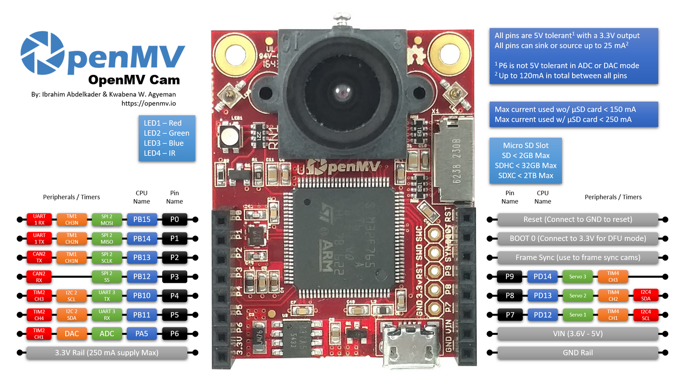

OpenMV Cam M7¶
OpenMV Cam M7 adalah papan visi mesin berbasis Cortex‑M7 yang dibangun di sekitar STMicroelectronics STM32F765 pada 216 MHz dengan 512 KB SRAM internal dan 2 MB flash internal. Sensor OV7725 yang disertakan menangkap bingkai skala abu-abu 640×480 atau RGB565 320×240 hingga 150 FPS, dan header pengguna 10‑pin memperlihatkan periferal UART, I²C, SPI, CAN, ADC/DAC, dan PWM.

Untuk datasheet lengkap, foto, dan dimensi lihat halaman produk OpenMV Cam M7.
Sorotan¶
STMicroelectronics STM32F765 Cortex‑M7 pada 216 MHz.
512 KB SRAM internal — tanpa SDRAM eksternal.
2 MB flash internal (tanpa flash QSPI eksternal).
Sensor OV7725 — skala abu-abu 640×480 atau RGB565 320×240 hingga 150 FPS.
USB kecepatan penuh (12 Mb/s) — muncul sebagai VCP + penyimpanan massal USB ke host.
Soket microSD — SD hingga 2 GB, SDHC hingga 32 GB, SDXC hingga 2 TB.
10 pin I/O, toleran 5 V dengan keluaran 3,3 V, 25 mA per pin (120 mA total di seluruh header), mampu interupsi. P6 tidak toleran 5 V bila digunakan dalam mode ADC atau DAC.
LED RGB pengguna dan dua LED IR 850 nm berdaya tinggi untuk pencahayaan aktif dalam kondisi visi cahaya rendah.
Catatan
M7 tidak memiliki chip manajemen daya on-board: tidak ada konektor baterai, tidak ada pengisi daya baterai, tidak ada ADC tegangan baterai, tidak ada LED status pengisian/daya, dan tidak ada tombol daya perangkat keras. Pasok daya papan dari USB atau VIN.
Pinout¶
{kind=link}

Referensi pin¶
Nama pin |
Fungsi |
|---|---|
P0 |
UART1 RX / SPI2 MOSI |
P1 |
UART1 TX / SPI2 MISO |
P2 |
SPI2 SCK / CAN2 TX |
P3 |
SPI2 NSS (CS) / CAN2 RX |
P4 |
I2C2 SCL / UART3 TX / TIM2 CH3 |
P5 |
I2C2 SDA / UART3 RX / TIM2 CH4 |
P6 |
ADC / DAC / TIM2 CH1 |
P7 |
I2C4 SCL / TIM4 CH1 |
P8 |
I2C4 SDA / TIM4 CH2 |
P9 |
TIM4 CH3 |
RESET |
tarik ke GND untuk mereset papan |
SYN |
pad sinkronisasi bingkai — terhubung langsung ke sensor kamera saja |
BOOT0 |
tarik ke 3,3 V saat power-on untuk DFU / ROM bootloader |
LED_RED |
Saluran merah LED RGB (aktif rendah) |
LED_GREEN |
Saluran hijau LED RGB (aktif rendah) |
LED_BLUE |
Saluran biru LED RGB (aktif rendah) |
LED_IR |
LED IR berdaya tinggi (kedua saluran dikendalikan bersama) |
Catatan
Pad SYN pada header terhubung langsung ke jalur trigger/eksposur sensor kamera — pad ini tidak dirouting ke MCU pada M7. Kendalikan atau baca secara eksternal; Anda tidak dapat mengubahnya dari MicroPython.
Pin daya¶
3.3V — rel 3,3 V yang diatur. Hingga 250 mA tersedia untuk shield (lebih sedikit jika kartu microSD sedang digunakan). Tidak seperti kamera yang lebih baru, pin ini bersifat dua arah — lihat peringatan di bawah.
VIN — masukan 3,6 – 5 V. Memasok daya papan melalui regulator on-board.
GND — ground bersama.
Catatan
Ketika USB dan VIN keduanya hadir, mana yang memiliki tegangan lebih tinggi yang memasok daya papan — dioda on-board secara sederhana memilih rel yang lebih kuat.
Peringatan
Anda boleh memberi daya pada M7 dengan memasukkan 3,3 V langsung ke pin 3.3V jika Anda tidak ingin melalui regulator on-board. Dalam hal itu, jangan juga menerapkan daya VIN atau USB secara bersamaan — men-drive balik regulator saat sumber daya lain aktif dapat merusak dan menghancurkan kamera secara permanen.
Tip
Gunakan perkiraan masa pakai baterai untuk memodelkan berapa lama M7 akan berjalan dengan baterai untuk siklus aktif/tidur-dalam tertentu.
Pin pemulihan dan debug¶
RESET — tarik ke GND untuk mereset papan. Melepaskannya membiarkan MCU memulai dengan normal.
BOOT0 — tarik ke 3,3 V saat menyalakan papan untuk masuk ke ROM bootloader STM32 (mode DFU). OpenMV IDE menggunakan mode ini untuk memflash ulang bootloader on-board.
Papan memperlihatkan header debug SWD (RST / SWCLK / SWDIO) di sebelah header GPIO, kompatibel dengan adapter ST‑LINK dan SEGGER J‑Link.
Periferal onboard¶
LED¶
M7 memiliki satu LED RGB pengguna ditambah sepasang LED IR 850 nm berdaya tinggi:
LED RGB pengguna — dapat dikontrol perangkat lunak, diperlihatkan sebagai
LED_RED,LED_GREEN, danLED_BLUEfrom machine import LED LED("LED_RED").on() LED("LED_GREEN").on() LED("LED_BLUE").on()
LED IR — kedua LED dikendalikan bersama melalui pin
LED_IR.LED_IRterhubung aktif tinggi di perangkat keras sementara firmware memperlakukan setiap LED on-board lainnya sebagai aktif rendah, jadi gunakanlow()/high()daripadaon()/off()(yang akan membalik logikanya):from machine import LED ir = LED("LED_IR") ir.low() # turn IR illumination ON ir.high() # turn IR illumination OFF
Sensor kamera¶
OV7725 dikendalikan melalui modul csi --- sensor kamera
import csi
cam = csi.CSI()
cam.reset()
cam.pixformat(csi.RGB565)
cam.framesize(csi.QVGA)
cam.snapshot(time=2000) # let auto‑exposure settle
while True:
img = cam.snapshot()
Sensor disolder ke papan pada M7 — tidak berada pada modul yang dapat diganti.
Kartu microSD¶
Ketika kartu dimasukkan, kartu tersebut dipasang secara otomatis di /sdcard dan dapat digunakan melalui sistem file biasa:
import os
for entry in os.listdir("/sdcard"):
print(entry)
Referensi bus¶
GPIO¶
Gunakan machine.Pin untuk membaca atau mengendalikan salah satu pin yang tercetak di papan. Keluaran adalah CMOS 3,3 V, toleran 5 V pada sisi masukan, dan dapat sink/source hingga 25 mA per pin (120 mA total di seluruh header).
from machine import Pin
out = Pin("P0", Pin.OUT)
out.on()
out.off()
out.value(1)
inp = Pin("P1", Pin.IN, Pin.PULL_UP)
print(inp.value())
Setiap pin masukan juga dapat memicu interupsi pada transisi tepi:
def handler(pin):
print("triggered:", pin)
Pin("P1", Pin.IN, Pin.PULL_UP).irq(
handler, Pin.IRQ_FALLING | Pin.IRQ_RISING,
)
UART¶
Bus |
TX |
RX |
|---|---|---|
UART1 |
P1 |
P0 |
UART3 |
P4 |
P5 |
from machine import UART
uart = UART(3, baudrate=115200)
uart.write("hello")
uart.read(5)
I²C¶
Bus |
SCL |
SDA |
|---|---|---|
I2C2 |
P4 |
P5 |
I2C4 |
P7 |
P8 |
from machine import I2C
i2c = I2C(2, freq=400_000)
i2c.scan()
i2c.writeto(0x76, b"hi")
Perangkat keras yang sama juga dapat digunakan dalam mode target (slave) melalui machine.I2CTarget untuk memperlihatkan wilayah memori ke kontroler I²C lain:
from machine import I2CTarget
buf = bytearray(32)
target = I2CTarget(2, addr=0x42, mem=buf)
SPI¶
Bus |
MOSI |
MISO |
SCK |
CS |
|---|---|---|---|---|
SPI2 |
P0 |
P1 |
P2 |
P3 |
from machine import SPI
from machine import Pin
spi = SPI(2, baudrate=10_000_000)
cs = Pin("P3", Pin.OUT, value=1) # CS is not driven by the SPI peripheral
cs.value(0)
spi.write(b"hello")
cs.value(1)
CAN¶
Bus |
TX |
RX |
|---|---|---|
CAN2 |
P2 |
P3 |
from machine import CAN
can = CAN(2, 500_000)
can.set_filters(None)
can.send(0x123, b"\xDE\xAD\xBE\xEF")
print(can.recv())
ADC dan DAC¶
P6 adalah satu-satunya pin analog pengguna. Pin ini dapat digunakan sebagai masukan ADC 12-bit atau keluaran DAC.
ADC — skala penuh pada 3,3 V di pin:
from machine import ADC import time adc = ADC("P6") while True: voltage = adc.read_u16() * 3.3 / 65535 print(voltage) time.sleep_ms(100)
DAC — melalui
pyb.DAC. Nilai 8-bit mencakup 0–3,3 V:from pyb import DAC dac = DAC("P6") voltage = 1.65 dac.write(int(voltage / 3.3 * 255))
Dalam mode ADC atau DAC, P6 hanya toleran 3,3 V — jangan masukkan 5 V ke sana.
PWM¶
Pin |
Timer / saluran |
|---|---|
P4 |
TIM2 CH3 |
P5 |
TIM2 CH4 |
P6 |
TIM2 CH1 |
P7 |
TIM4 CH1 |
P8 |
TIM4 CH2 |
P9 |
TIM4 CH3 |
Catatan
TIM1 direservasi oleh firmware untuk menghasilkan pixel clock sensor kamera, sehingga saluran TIM1 yang secara fisik berada di P0/P1/P2 tidak dapat digunakan untuk PWM pengguna tanpa merusak kamera.
TIM4 dibagikan dengan pyb.Servo — menginstansiasi servo mengonfigurasi ulang seluruh timer untuk operasi 50 Hz, jadi jangan campurkan machine.PWM pada P7/P8/P9 dengan pyb.Servo dalam skrip yang sama.
Kendalikan salah satunya melalui machine.PWM
from machine import Pin, PWM
pwm = PWM(Pin("P7"), freq=1_000, duty_u16=32768)
Bus bit-banging perangkat lunak¶
machine.SoftI2C dan machine.SoftSPI bekerja pada GPIO apa pun jika Anda memerlukan bus tambahan.
Sensor termal (di luar papan)¶
Firmware mencakup driver fir --- driver sensor termal (fir == far infrared) untuk imager termal yang dihubungkan secara eksternal:
MLX90621 — array IR 16 × 4
MLX90640 — array IR 32 × 24
MLX90641 — array IR 16 × 12
AMG8833 — array IR 8 × 8
Hubungkan modul ke bus I²C papan dan baca bingkai dengan fir.init() + fir.snapshot()
import time
import image
import fir
fir.init() # auto‑detects the sensor
clock = time.clock()
while True:
clock.tick()
try:
img = fir.snapshot(x_scale=5, y_scale=5,
color_palette=image.PALETTE_IRONBOW,
hint=image.BICUBIC,
copy_to_fb=True)
except OSError:
continue
print(clock.fps())
Driver fir hanya berkomunikasi dengan sensor melalui I²C 2 — hubungkan modul ke P4 (SCL) dan P5 (SDA).
Pengaturan waktu¶
time¶
Modul time mencakup penundaan pemblokiran, tanda waktu monoton, dan pengukuran waktu berlalu:
import time
time.sleep(1) # seconds
time.sleep_ms(500)
time.sleep_us(10)
start = time.ticks_ms()
# ...do work...
elapsed = time.ticks_diff(time.ticks_ms(), start)
Timer virtual¶
machine.Timer menjadwalkan callback berkala atau sekali tembak tanpa mengonsumsi slot timer perangkat keras. Berikan -1 sebagai id untuk menggunakan timer virtual (perangkat lunak):
from machine import Timer
one_shot = Timer(-1)
one_shot.init(period=5_000, mode=Timer.ONE_SHOT,
callback=lambda t: print("once"))
periodic = Timer(-1)
periodic.init(period=2_000, mode=Timer.PERIODIC,
callback=lambda t: print("tick"))
Nilai periode dalam milidetik. Panggil deinit() untuk menghentikan dan melepaskan slot.
Real‑time clock¶
machine.RTC menjaga waktu jam dinding saat reset:
from machine import RTC
rtc = RTC()
rtc.datetime((2026, 4, 30, 4, 12, 0, 0, 0)) # Y, M, D, weekday, h, m, s, subsec
print(rtc.datetime())
Watchdog¶
machine.WDT mereset papan jika aplikasi hang. Setelah dimulai tidak dapat dihentikan atau dikonfigurasi ulang — beri makan secara berkala di dalam loop utama Anda:
from machine import WDT
wdt = WDT(timeout=5_000) # 5 second window
while True:
# ...do work...
wdt.feed()
Informasi boot dan runtime¶
Jendela bootloader USB¶
Pada setiap power-up, kamera menjalankan bootloader singkat (beberapa detik) yang memungkinkan OpenMV IDE memperbarui firmware tanpa pengguna harus masuk ke mode DFU. Setelah jendela berakhir, bootloader menyerahkan ke boot.py dan kemudian main.py.
Skrip yang sedang berjalan dapat kembali masuk ke bootloader sesuai permintaan dengan memanggil machine.bootloader()
import machine
machine.bootloader()
Sistem file dan urutan boot¶
Firmware M7 memasang hingga tiga sistem file saat boot:
Flash internal — selalu dipasang di
/flash. Menyimpanmain.pydanREADME.txtsecara default; dibuat pada boot pertama kali.Kartu microSD — jika kartu dimasukkan, kartu dipasang di
/sdcard.ROMFS — sistem file ROMFS yang dipetakan memori hanya-baca di
/romyang digunakan untuk mengirimkan aset data besar (mis. model AI) yang mendapat manfaat dari akses zero-copy. Dipasang secara otomatis oleh MicroPython saat startup, sebelum Python pengguna apa pun berjalan.
Setelah dipasang, direktori kerja diatur ke /sdcard bila kartu ada, jika tidak ke /flash. Interpreter kemudian menjalankan skrip dari direktori tersebut:
boot.pydieksekusi pada setiap soft reset (cold boot,Ctrl‑Ddari REPL, atau setiap kali skrip yang berjalan kembali).main.pydieksekusi hanya pada cold boot, segera setelahboot.py. Soft reset berikutnya menjalankan ulangboot.pytetapi langsung ke REPL — untuk menjalankan ulangmain.pyAnda harus mereset papan sepenuhnya.
Meletakkan boot.py atau main.py ke kartu SD menggantikan salinan di flash tanpa menyentuhnya — kedua file dicari di direktori boot (/sdcard bila kartu dipasang, jika tidak /flash).
main.py default yang dikirimkan pada papan yang baru di-flash hanya mengedipkan saluran biru LED RGB pengguna sebagai detak jantung (dua pulsa pendek, jeda pendek), sehingga Anda dapat mengetahui firmware berhasil boot tanpa host terpasang.
sys.path diperluas untuk menyertakan ketiga sistem file dan subdirektori lib/ mereka, sehingga modul yang dapat diimpor dapat berada di /flash/lib, /sdcard/lib, atau /rom/lib.
Untuk memaksa sistem mengabaikan kartu SD yang dimasukkan (misalnya untuk menjalankan main.py flash bahkan dengan kartu yang ada), buat file kosong bernama SKIPSD di root /flash.
Saat terhubung melalui USB, sistem file boot (/sdcard jika kartu ada, jika tidak /flash) juga dienumerasi sebagai drive penyimpanan massal USB di host, memungkinkan Anda mengedit boot.py, main.py, dan file lainnya secara langsung. Eject drive sebelum mereset kamera agar host membuang penulisan yang di-cache.
Catatan
Karena OS memperlakukan drive sebagai perangkat blok pasif, file yang dibuat atau dimodifikasi oleh kode yang berjalan di OpenMV Cam tidak akan muncul sampai host memasang ulang drive. Jika OS dan OpenMV Cam menulis sistem file yang sama secara bersamaan, OS akan menang dan menimpa perubahan yang dibuat oleh kamera. Gunakan kartu SD untuk data apa pun yang ditulis kembali oleh skrip, dan pasang ulang sebelum membaca file-file tersebut dari host.
Catatan
Saluran merah LED RGB pengguna mungkin sesaat menyala saat host membaca dari atau menulis ke drive penyimpanan massal USB — ini adalah indikator aktivitas yang dikendalikan firmware, bukan kesalahan.
Ukuran penyimpanan¶
M7 dikirimkan dengan:
/flash— sistem file FAT 96 KB, baca/tulis./rom— ROMFS yang dipetakan memori hanya-baca 256 KB./sdcard— ukuran penuh kartu microSD apa pun yang dimasukkan (bila ada), baca/tulis.
Indikator hard‑fault¶
Jika LED RGB pengguna berputar cepat melalui semua warna — cukup cepat sehingga cenderung terlihat seperti LED putih berkedip daripada warna yang berbeda — firmware telah mengalami hard fault yang tidak dapat dipulihkan. Flash ulang firmware untuk memulihkan; jika reflash tidak membantu, papan mungkin rusak secara fisik.
Pustaka perangkat lunak¶
Lihat indeks pustaka untuk daftar lengkap modul — termasuk modul mana yang unik untuk build M7.